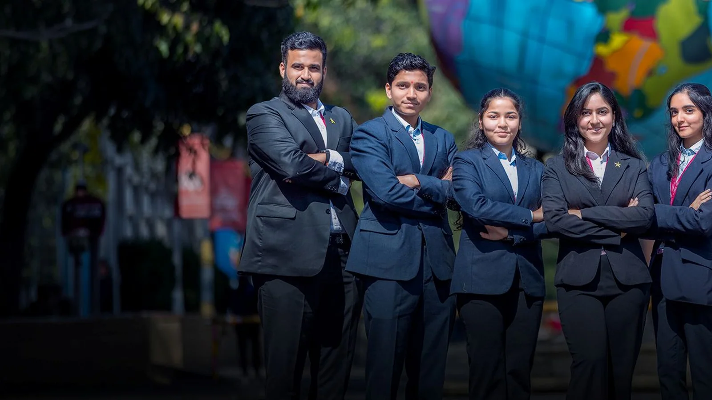

Prof. Anjali Ajit Sane
Professor & Dean

Professor & Dean
The Department of Commerce and Accounting at MIT-WPU is committed to cultivating skilled professionals who possess a comprehensive understanding of financial analysis, tax management, statutory accounting,…